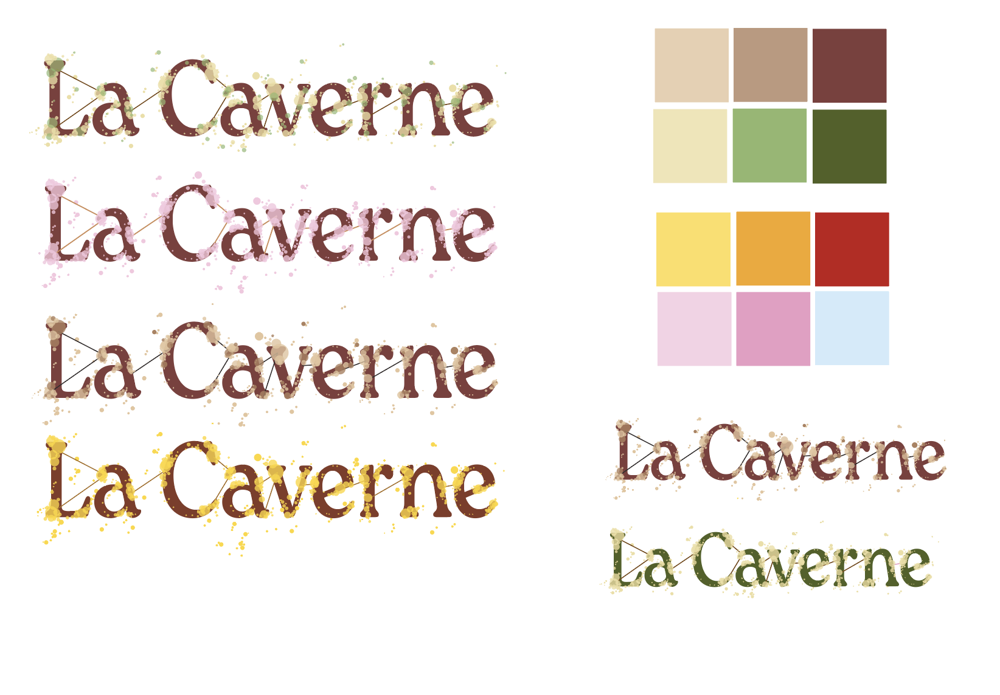
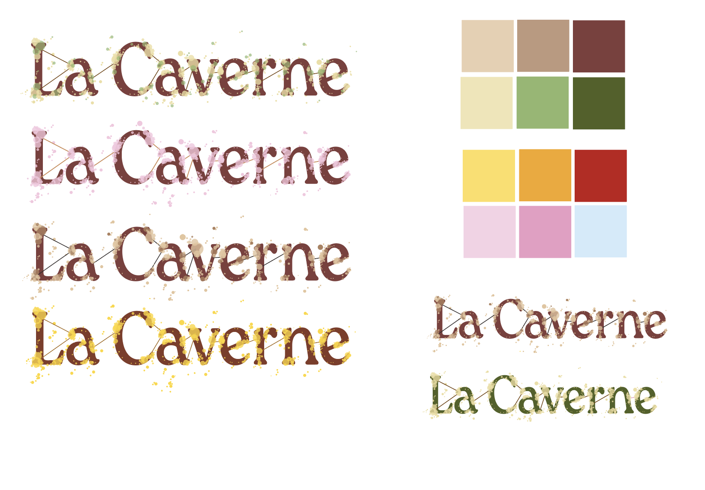
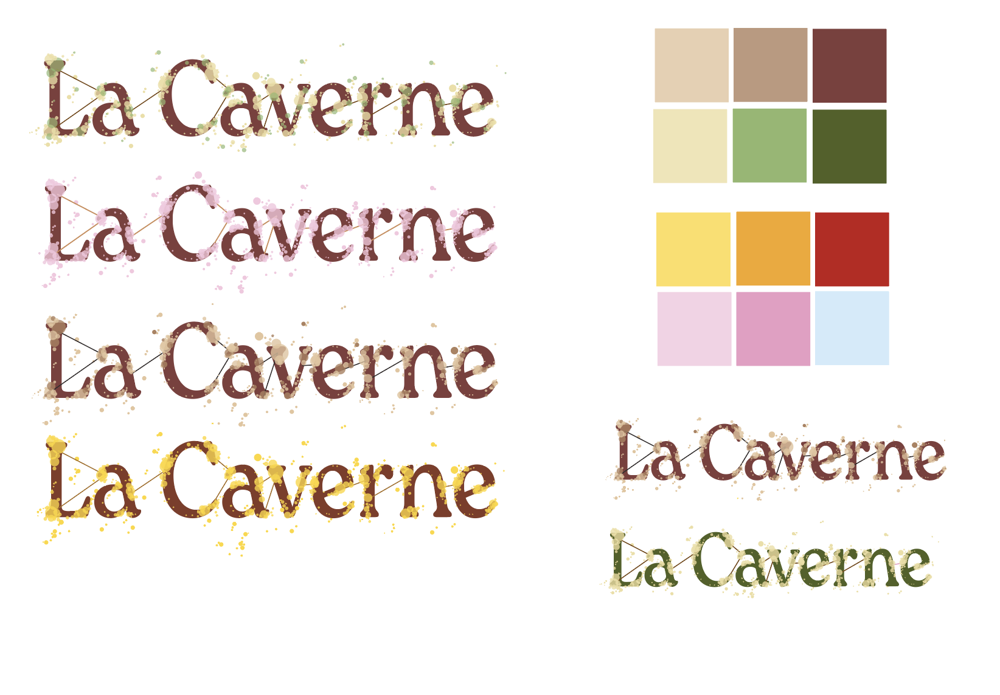

Comment transformer une champignonnière souterraine en une marque attrayante et engageante ? C’est la réflexion qui a guidé la création de l’identité visuelle de La Caverne. Située dans un ancien parking de la Chapelle, cette champignonnière intra-muros de Paris cultive des champignons biologiques en circuit court. Le logo puise son inspiration dans l’univers du champignon : les spores, symboles de connexion et de diffusion, deviennent des éléments graphiques dynamiques, tandis que des lignes fines, inspirées du mycélium, relient les lettres et les formes. Ces choix graphiques reflètent les valeurs de proximité, de nature et de santé, tout en créant une identité fluide et vivante. La palette de couleurs, mêlant marron terreux et teintes gourmandes, évoque la fraîcheur et la diversité des produits, invitant à la découverte culinaire. Cette identité singulière permet à La Caverne de renforcer son lien avec les consommateurs parisiens et d’accroître sa visibilité.
How can a subterranean mushroom farm be transformed into an engaging and appealing brand? This is the question that guided the creation of the visual identity for La Caverne. Located in a former parking garage in the Chapelle district, this in-city mushroom farm produces organic mushrooms through a short circuit. The logo draws inspiration from the world of mushrooms: spores, symbols of connection and dispersion, become dynamic graphic elements, while fine lines, inspired by mycelium, link the letters and shapes. These graphic choices reflect the values of proximity, nature, and health, while creating a fluid and lively identity. The color palette, blending earthy browns and appetizing hues, evokes the freshness and variety of the products, inviting culinary discovery. This unique identity helps La Caverne strengthen its bond with Parisian consumers and enhance its visibility.
Septembre 2024 - Projet de 2e année de DnMade.
